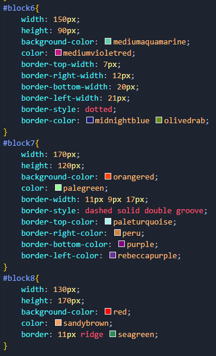
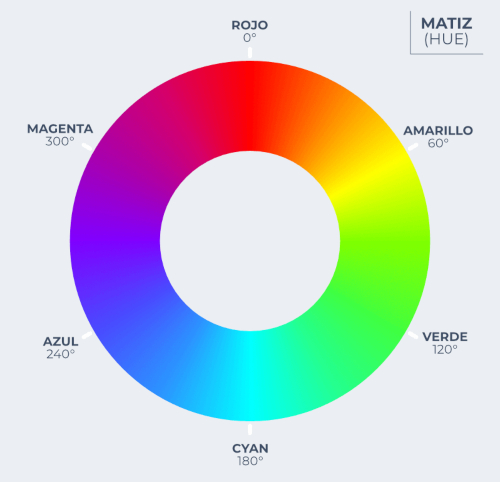

Border:
border-style:
Listado de valores para border-style:
- none
- hidden
- dotted
- dashed
- solid
- double
- groove
- ridge
- ;inset
- outset
border-radius:
Es la propiedad que permite redondear vértices de forma independiente. Es un shorthand que engloba 4 propiedades:
- border-top-left-radius:
- Radio del borde superior izquierdo.
- border-top-right-radius:
- Radio del borde superior derecho.
- border-bottom-right-radius:
- Radio del borde inferior derecho.
- border-bottom-left-radius:
- Radio del borde inferior izquierdo.
Si sólo recibe un valor dibujará un círculo en el vértice que se especifique, si recibe dos valores dibujará una elipse.
Si se utiliza el border-radius como shorthand hay diferencias entre si se va dar un valor a cada lado (círculo) o dos (elipse):
Un valor:
- border-radius: 50px;
- Círculo de 50px a cada vértice.
- border-radius: 50px 100px;
- Círculo de 50px en el vértice superior izquierdo y en el inferior derecho y de 100px en el superior derecho y el inferior izquierdo.
- border-radius: 50px 100px 200px;
- Círculo de 50px en el vértice superior izquierdo, de 100px en el superior derecho y el inferior izquierdo y de 200px en el inferior derecho.
- border-radius: 50px 100px 200px 300px;
- Círculo de 50px en el vértice superior izquierdo, de 100px en el superior derecho, de 200px en el inferior derecho y de 300px en el inferior izquierdo.
2 valores (Al tener dos radios se deben agrupar los radios y separarlos por una barra) :
- border-radius: 25px / 50px;
- Elipse de 25px en Y y 50px en X a cada vértice.
- border-radius: 25px 50px / 50px 100px;
- Elipse de 25px en Y y 50px en X a los vértices superior izquierdo e inferior derecho y una elipse de 50px en Y y 100px en X en los vértices superior derecho e inferior izquierdo.
- border-radius: 25px 50px 75px / 50px 100px 150px;
- Elipse de 25px en Y y 50px en X al vértice superior izquierdo, una elipse de 50px en Y y 100px en X en los vértices superior derecho e inferior izquierdo y una elipse de 75px en Y y de 150px en X al vértice inferior derecho.
- border-radius: 25px 50px 75px 100px / 50px 100px 150px 200px;
- Elipse de 25px en Y y 50px en X al vértice superior izquierdo, una elipse de 50px en Y y 100px en X en el vértice superior derecho, una elipse de 75px en Y y de 150px en X al vértice inferior derecho y una elipse de 100px en X y 200px en Y en el vértice inferior izquierdo.
Ejemplo border:

Bloque 6
Bloque 7
Bloque 8
Ejemplo border-radius:
Outline:
Outline es la propiedad que permite dibujar un borde por fuera del modelo de caja. Es un shorthand que engloba:
- outline-width:
- Controla el ancho del ouline.
- outline-style:
- Controla el estilo del outline.
- outline-color:
- Controla el color del outline.
Tiene las mísmas propiedades y sintaxis que border, pero con algunas diferencias:
- No ocupa sitio, ya que no forma parte del box-model.
- No se puede redondear.
- No se pueden controlar los lados de forma independiente.
También cuenta con la propiedad outline-offset, que permite aumentar o disminuir la distancia del outline respecto a la caja a la que pertence.
Ejemplo outline:
Colores:
Existen varias formas de dar colores en css:
Keywords:
Palabras clave que representan colores
Tambien existe el color transparent.
CurrentColor: Es una palabra clave que se puede usar en lugar de cualquier valor de color y usará el valor ya sea establecido o heredado en la propiedad color, no background-color. Aunque al dia de hoy no es muy usada gracias a las variables de CSS.
RGB/RGBA:
En el modo RGB hay tres canales (Red, Green, Blue) y se tiene 8 bits de color por canal, (cada bit tiene dos posibles valores 0 ó 1) lo que significa que se tiene 28 posibles valores, que van desde 0 hasta 255. Esto da un total de 255 * 255 * 255 = 16.581.375 colores.
Su sintaxis es rgb(R,G,B)
Si todos los canales se definen a 0 da un negro puro y si se definen a 255 da un blanco.
Para obtener gama de grises se definen los 3 canales con el mismo valor, si se definen los 3 canales a 128 se obtiene el gris puro.
El modo RGB da la opción de utilizar un cuarto canal que correspondería al canal alpha (la transparencia), y su valor va desde 0 a 1. Hay dos sintaxis para utilizar el canal aplha:
- rgba(R,G,B,A)
- rgb(R G B / A)
Hexadecimal:
La notación hexadecimal es la más común en desarrollo web, se basa en los mismos principios que el RGB pero escrito en notación hexadecimal. El sistema hexadecimal es un sistema basado en 16 valores del 0 al 15.
Utiliza los dígitos del 0 al 9 y las letras de la A a la F.
En este tipo de notacíon también necesitamos 256 valores. Se compone de 16 caracteres en parejas. 16*16 = 256
Para indicar que vamos a usar notación hexadecimal debemos usar el símbolo de hash/almohadilla # y a continuación usaremos esta notación por parejas: #RRGGBB
Cuando una pareja usa el mismo valor se puede omitir el segundo valor, siempre que se haga en las 3 parejas.
También hay la opción de usar transparencias en hexadecimal añadiendo un cuarto canal que sigue las mismas normas.
- rgb(255,255,255) = #FFFFFF = #FFF
- rgb(0,0,0) = #000000 = #000
- rgb(0 0 0 / .5) = #00000080 = #0007
HSL / HSLA:
El modo de color HSL es el más intuitivo para los humanos. Su nombre viene de las siglas Hue (tono) Saturation (saturación) y Lightness (luminancia).
El primer valor es el ángulo en el círculo cromático donde 0 y 360 será el color rojo. Hay ciertos valores que pueden servir como referencia para relacionar mejor los colores con sus ángulos.

- 0: rojo.
- 60: amarillo.
- 120: verde.
- 180: cyan.
- 240: azul.
- 300: magenta.
El segundo valor es la saturación o intensidad del color.
- 0%: gris.
- 100%: color puro.
El tercer valor es la luminosidad del color.
- 0%: negro, nada de luz.
- 100%: blanco, luz máxima.
Es importante que aunque el valor de saturación o luminancia sea 0 hay que poner 0% si no, no funcionará
El modo HSL también admite transparencia y su sintaxis es la misma que la del modo RGB. Hay dos sintaxis disponibles, en ambos casos el valor alpha va de 0 a 1:
- hsla(h,s,l,a)
- hsl(h s l / a)
Páginas para colores: